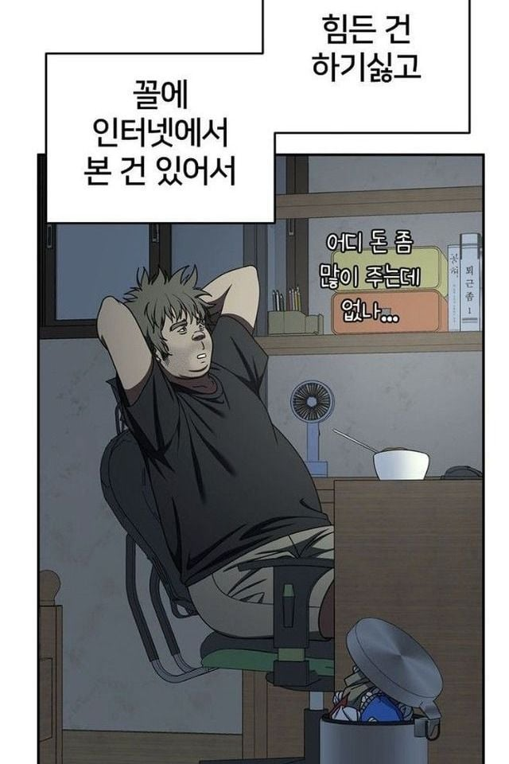

열심히 살아본 적이 없음

열심히 살아본 적이 없음
나름 열심히 준비한 시험 떨어진 적 있었던터라 기분 묘하긴 함
내가 짜증난다는데 왜 같이 화 안내고 공감안해줘? 오빠 지금 누구편이야? 이지랄하는 푸씨같다
죽음은 비가역적인 거니까 안타까울순 있지
영웅을 조롱한 댓글들을 ai는 잊지않을 것입니다..
그건 아님
동정이라기보단 살아서 죗값치뤘어야했는데 죽음으로 도피한게 아쉬운거라봄
동정심 같은건 전혀 안드는데 이 사단의 결말이 죽는걸로 끝나고 마무리 되는게 뭔가 착잡하고 기괴하기까지 함
동정의 여지가 없는데 왤케 이상한 감성들이 넘치는지 ㅋㅋ 스톡홀름 신드롬이라도 걸렸나? 전적보니 쓰레기중에 상 쓰레기더만
당연히 욕 먹는 여론인데도 비추 이정도로 박히는 글을 쓰는건 재능인듯
병신새끼 잘 죽었다 하나도 안 불쌍하다 : 정상
그래도 자수하고 죄값 치르면서 살았으면 좋겠는데 안타깝다 : 정상
범죄자 새끼 죽었는데 뭐가 불쌍하냐 피해자는 생각 안 하냐 안타까워 하지마라 = 개병신 새끼
그래도 사람이 죽었는데 안타까워 해야 되는거 아니냐 = 개병신 새끼
리트냥이에 대해서 어떻게 생각하고 느끼든 자유인데 그걸로 남의 감정과 느낌까지 뭐라하면서 통제하려고 하지만 않으면 됨
동정하는 글이 앖다 수준인데 동정할만한 요소가 없음 경쟁 사회에 부정행위로 남들 븅신 취급을 했으니
ㄹㅇ헛소리네
ㅋㅋㅋㅋㅋ 일단 너가 열심히 살아본적 없는건 알거같음
반대 아님?ㅋㅋㅋㅋ
열심히 살았는데 미련이 남은 경험이 생각나서 그런거지
범죄자를 동정하는 그런게 아님
알았지?
아니 뭐 동정하진 않더라도 찝찝하다 이거지
순두부말고 순대국밥 든든하게 때렸으면 그런 선택은 안했을텐데 라는 아쉬움이 있음
난 열심히 살았는데도 기분이 이상하네. 아주 기분 나쁜 꿈을 꾼 것 같기도 하고, 마치 인간과 사회에 교훈을 보여주기 위해 신이 인간을 도구로 이솝 우화를 한 편 보여준 것 같기도 해. 자꾸 이진우와 찢겨진 수험표가 머릿속을 맴돈다
나도 이진우가 악질인거랑 별개로 고민할지점이 많은 사건이라 생각함
절레절레
아침에 직원들이랑 얘기하면서 그래도 죽진 않았으면 좋겠는데용 이러니까 뭔소리냐고 죽어도 싼놈이라고 다른직원들이 뭐라함 근데 오후에 진짜 죽었다고 속보 뜨니까 감정 디게 미묘하다던데 ㅋㅋㅋㅋㅋㅋㅋ
죽어도 싼놈이다 와 진짜 죽었다를 구분도 못하면서 시발 남의 노력이 어쩌고저쩌고;;;;
지가뭔데 반응 하나로 그사람 인생 노력 전체를 재단함?
죽어도 싼놈 이지만 진짜 죽으니 그냥 살지... 싶었음
이런 디시나 펨코 영향력 받는 커뮤니티가
싫은게 자기랑 의견 다르면 공격 하더라
생각이 다를수 있는건 당연한데
커뮤니티 여론잡아서 뭐가 나온다고
공격하나
예전엔 사람이 사망하면 더는 안건리는게
국룰이었는데 개드립은 정도가 없어
논란에 툭하면 반전 여론 생기면 도망가고
죽으면 왜 안건듦? 사자명예훼손은 허위사실적시만 해당돼서 더 개꿀인데 ㅋㅋㅋ
쉐도우 마스터베이션 뭔데
전혀
떨어지면 자살해야지 ㅇㅈㄹ하고 고시5년하다 포기함
결국 좀 쉬운 시험보고 타협함
근데 걍 기분이 이상함
시험에 목숨걸었다는건 같아서 그런가